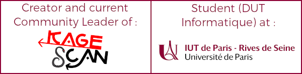

Logan TANN
Etudiant en informatique et passionné de la programmation web (mais pas que...)
Mes projetsQuand programmation et passion s'harmonisent
Fan de la série japonaise multi-contenus Kagerou Project et intéressé par la programmation dès mon plus jeune âge, je me suis servi de mes "skills" en informatique pour créer et maintenir une communauté nommée Kagescan !

Parmi les différents projets créés, le Web est selon moi le meilleur moyen d'exprimer ma créativité. C'est pourquoi j'étudie actuellement l'informatique à l'IUT de Paris Rives de Seine (Université de Paris).
Skills -> A DEPLACER DANS COMPETANCES et REMPLACER ça PAR UN LIEN VERS CETTE PAGE
Mes 4 domaines prédominants
Web backend
J'ai pratiqué depuis de longues années le PHP, j'essaie donc de tenter mon aventure avec NodeJS assez récemment. Je m'intéresse depuis peu au concept de serverless avec la solution Firebase de Google Cloud.
Web front-end
J'adore me contenter des dernières technologies web (Javascript ES6 et DOM moderne) mais je pratique aussi avec des librairies (Materialize, Monogatari, Bootstrap) et des frameworks (Vue.JS) selon les projets et ses spécifications.
Community Lead
J'adore partager mes passion, et quoi de mieux qu'internet pour le faire ? Maintenir une communauté m'a permis non seulement garder une certaine motivation, mais aussi de pouvoir travailler avec une équipe et son organisation !
Infographie
Maintenir une communauté m'a aussi permi d'approfondir ma maitrise infographique, en crééant des fantraductions sur divers supports par exemple. Je m'intéresse beaucoup au graphisme vectoriel et la possibilité de l'animer.
Compétances
COmpétencesQuelques un de mes projets
Portfolio

Kagescan.fr
Site contenant l'ensemble des projets créés à l'occasion de la communauté au même nom, tel que des fan-traductions ou des pages explicatives. Actuellement programmé en PHP et en arrêt de mise à jour depuis 2018, je compte le re-créer en Vue.JS dès février 2021
Retaining's Memories
Un jeu de type "Visual Novel" traduit en diverses langues (FR, EN, ES, DE...), créé en HTML5 et JavaScript DOM à l'aide de la librairie Monogatari.
Ce projet a pour but de compiler les trames de chaque médias (musiques, roman, manga, dessin animé...) de la série "Kagerou Project" en un unique jeu, afin de faciliter la compréhension de l'oeuvre.
En voir plus sur GitHub
Les projets présentés ici sont en état de "perpétuelle évolution", fabriqués durant mon petit temps libre et qui seront toujours maintenus. Mon github regorge de projets de plus petite envergure, tel que des projets scolaires, des logiciels utilitaires ou des mini-jeux. Je contribue aussi à des projets open-source tel que la librairie Monogatari.
Me contacter
Formlaire de contact
Le formulaire